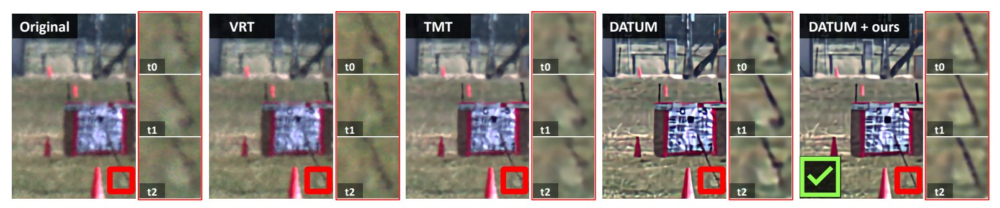
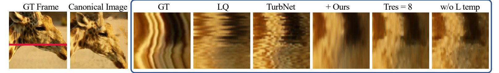
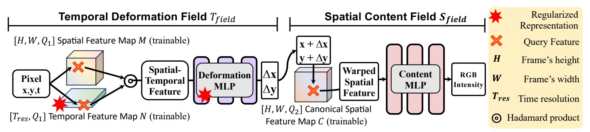
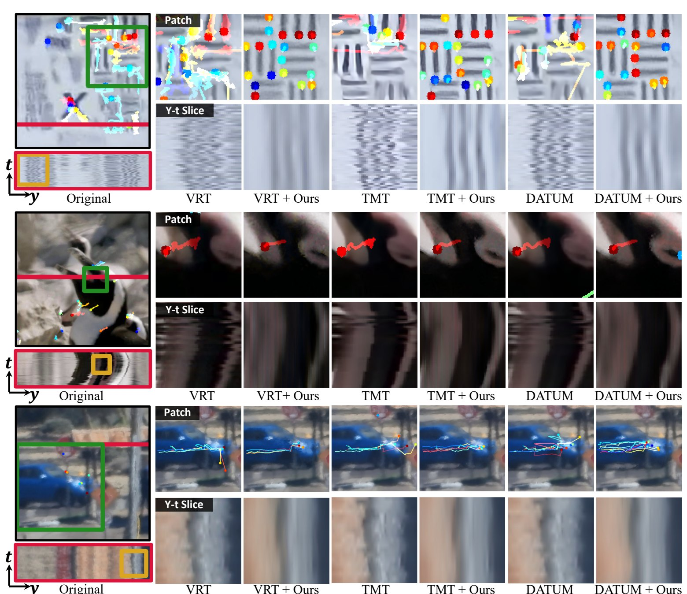

with Neural Representations
1University of Maryland · 2Massachusetts Institute of Technology · 3Rice University · *Equal contribution
TL;DR A representation with only a few temporal features can’t express fast jitter: a low-pass filter over time.
Video turbulence-mitigation (ATM) methods clean up each frame, but the result is not consistent from one frame to the next.

Over time, turbulence is high-frequency jitter, like noise. ConVRT gives its video representation only a few temporal features (Tres ≪ T; Tres = 5 in the paper), so it can only learn the low-frequency part: the jitter is removed and the slow motion stays.
Real frames and y–t slices of the aircraft clip below (the clip’s own marker lines are removed or dimmed). The edge path with fewer temporal features is fitted to the measured edge, as an illustration.

A Temporal Deformation Field predicts how far each pixel is shifted from a canonical frame, and a Spatial Content Field reads its colour there. ConVRT is fitted to each video, guided by the output of an existing ATM method.

Added to VRT, TMT or DATUM, ConVRT steadies feature tracks and straightens y–t slices.

After the argument · Citation